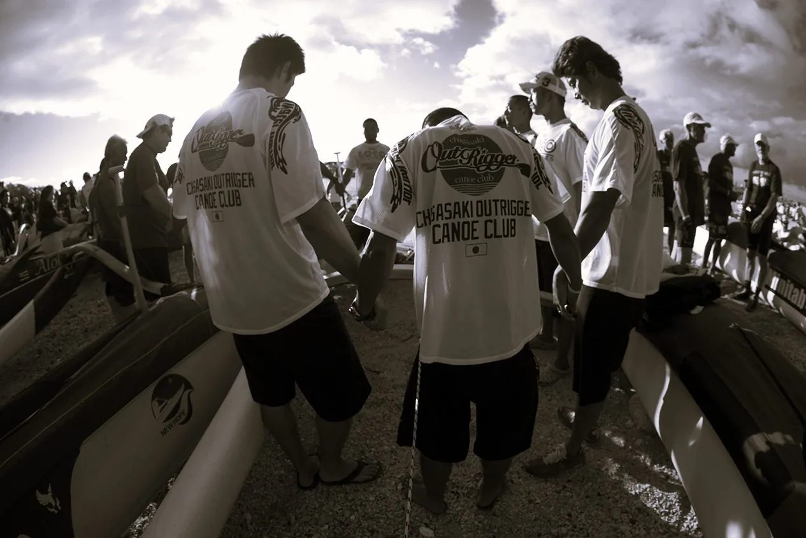

CHIGASAKI OUTRIGGER CANOE CLUB
COCC
JP
/
EN
クラブについて
初めての方へ
会員案内
会費
活動時間
安全管理
COCC KIDS
大会・イベント
年間スケジュール
大島クロッシング
Hukilau Challenge
Women's Ho'aikane
お問い合わせ
アクセス
FAQ
安全管理
海の心得
緊急時対応
会場ルール
必要装備
海の心得
出艇前に、風・波・潮・天気予報を全員で確認する。
体調がすぐれないとき、睡眠不足のときは無理をしない。
海の上では、ステア（舵取り）とリーダーの指示に従う。
迷ったら出ない。引き返す判断をためらわない。
単独で海に出ない。必ず複数人で行動する。
緊急時対応
まず全員の安全を確認
人数を数え、けが人がいないかを確かめます。
艇から離れない
転覆（フリ）したときは艇につかまり、手順に沿って起こします。
陸に連絡
連絡手段を持って出艇し、必要なときは陸の担当者へ連絡します。
海の事故は118番
海上での事故は海上保安庁（118番）、陸でのけがや急病は119番へ通報します。
会場ルール
浜では、サーファーや海水浴の方など他の利用者を優先し、譲り合う。
艇や道具は決められた場所に置き、通路をふさがない。
ごみは必ず持ち帰る。使った道具は真水で洗って片付ける。
車や自転車は決められた場所に停める。
早朝は近隣の迷惑にならないよう、静かに準備する。
必要装備
季節によって必要な装備が変わります。迷ったときは、事前にメンバーへ相談してください。
夏季
冬季
服装
Tシャツ、水着
ウェットパンツ、防風のパドルジャケット
足もと
ビーチサンダル（夏の砂浜は熱く、やけどのおそれがあります）
ウェットブーツ
頭・手
帽子、サングラス
ニット帽、グローブ
共通
ライフジャケット、飲み物、タオル、着替え
ライフジャケット、温かい飲み物、タオル、着替え
夏季の注意
：熱中症と日焼けに注意。こまめに水分をとり、日焼け止めと帽子を使いましょう。クラゲが出る時期は肌の露出を減らします。
冬季の注意
：低体温に注意。濡れたままでいると急に体が冷えます。風を通さない上着と、上陸後すぐ着替えられる準備を。
